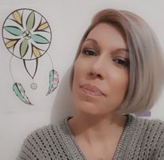

 Méduim Guérisseuse depuis des années, j'effectue les soins et les guidances par les énergies vibratoires. Contrairement à une magnétiseuse, j'utilise celles-ci pour canaliser et soigner en retransmettant ce que l'univers veut bien me montrer. Les guidances sont des messages reçus de vos guides et les miens m'envoient par le biais de la clairvoyance, la clairaudience et le support des oracles divinatoires. Je ne suis donc qu'un canal qui se positionne sur une fréquence adaptée. Mon objectif? Vous apportez des réponses à vos questionnements du moment et vous aider à aborder la situation de façon plus sereine, ainsi que de travailler vos blessures émotionnelles. La bienveillance et l'empathie qui m'animent feront de nos consultations un moment de partage et de bien-être
Chaque consultation se passe à distance, Plusieurs possibilités s'offrent à vous : .
| 1) | Messenger | |
| 2) | WatsApp |  |
| 3) | Par Téléphone |  |
| 4) | Par message écrit |

Si vous voulez de plus amples explications sur la transparence de mon travail n'hésitez pas à aller sur ma page Facebook pour voir les lives et les avis des consultants